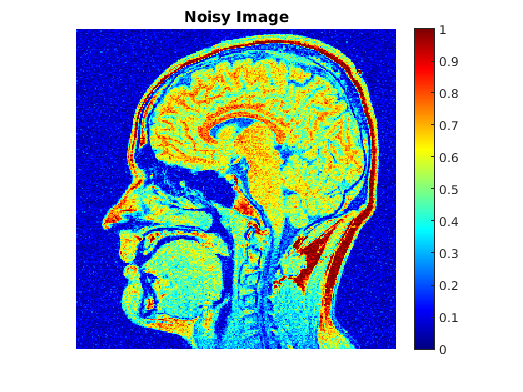
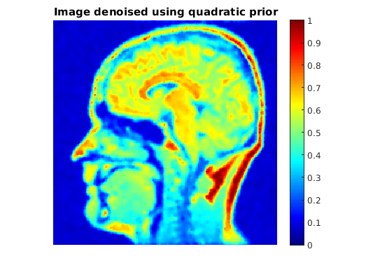
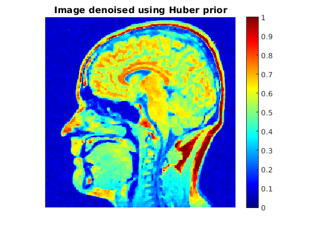
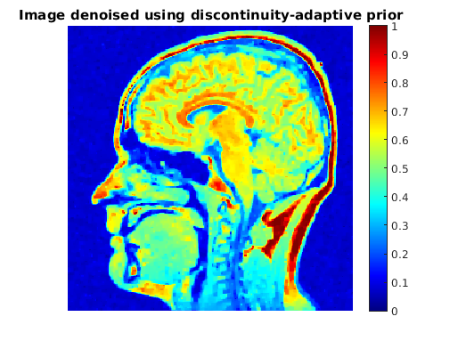
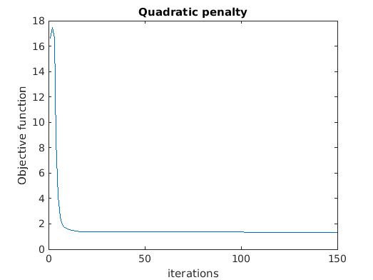
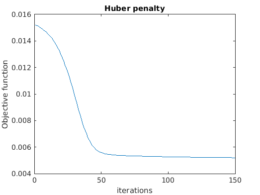
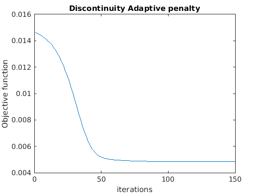

Contents
load('../data/brainMRIslice.mat');
Y = brainMRIsliceNoisy;
Noiseless = brainMRIsliceOrig;
Part A
rrmse = RRMSE(Noiseless,Y);
disp(rrmse);
0.1424
Part B
MRF prior: Quadratic function
best_alpha = 0.997;
[denoised_quad,obj_quad] = Gradient_Descent(Y,best_alpha,0,"Quadratic",1);
rrmse = RRMSE(Noiseless,denoised_quad);
disp(rrmse);
[denoised,~] = Gradient_Descent(Y,1,0,"Quadratic",0);
rrmse = RRMSE(Noiseless,denoised);
disp(rrmse);
[denoised,~] = Gradient_Descent(Y,best_alpha*0.8,0,"Quadratic",0);
rrmse = RRMSE(Noiseless,denoised);
disp(rrmse);
0.2259
0.2261
0.4872
MRF prior: Discontinuity-adaptive Huber function
best_alpha = 1;
best_gamma = 0.00017;
[denoised_huber,obj_huber] = Gradient_Descent(Y,best_alpha,best_gamma,"Huber",1);
rrmse = RRMSE(Noiseless,denoised_huber);
disp(rrmse);
[denoised,~] = Gradient_Descent(Y,1,best_gamma,"Huber",0);
rrmse = RRMSE(Noiseless,denoised);
disp(rrmse);
[denoised,~] = Gradient_Descent(Y,best_alpha*0.8,best_gamma,"Huber",0);
rrmse = RRMSE(Noiseless,denoised);
disp(rrmse);
[denoised,~] = Gradient_Descent(Y,best_alpha,best_gamma*1.2,"Huber",0);
rrmse = RRMSE(Noiseless,denoised);
disp(rrmse);
[denoised,~] = Gradient_Descent(Y,best_alpha,best_gamma*0.8,"Huber",0);
rrmse = RRMSE(Noiseless,denoised);
disp(rrmse);
0.1426
0.1426
0.9995
0.1432
0.1428
MRF prior: MRF prior: Discontinuity-adaptive function
best_alpha = 1;
best_gamma = 0.000165;
[denoised_adap,obj_adap] = Gradient_Descent(Y,best_alpha,best_gamma,"Adaptive",1);
rrmse = RRMSE(Noiseless,denoised_huber);
disp(rrmse);
[denoised,~] = Gradient_Descent(Y,1,best_gamma,"Adaptive",0);
rrmse = RRMSE(Noiseless,denoised);
disp(rrmse);
[denoised,~] = Gradient_Descent(Y,best_alpha*0.8,best_gamma,"Adaptive",0);
rrmse = RRMSE(Noiseless,denoised);
disp(rrmse);
[denoised,~] = Gradient_Descent(Y,best_alpha,best_gamma*1.2,"Adaptive",0);
rrmse = RRMSE(Noiseless,denoised);
disp(rrmse);
[denoised,~] = Gradient_Descent(Y,best_alpha,best_gamma*0.8,"Adaptive",0);
rrmse = RRMSE(Noiseless,denoised);
disp(rrmse);
0.1426
0.1483
0.9997
0.1490
0.1485
Part C
figure; imshow(Noiseless); title('Noiseless Image');colormap('jet');colorbar;
figure; imshow(Y); title('Noisy Image');colormap('jet');colorbar;
figure; imshow(denoised_quad); title('Image denoised using quadratic prior');colormap('jet');colorbar;
figure; imshow(denoised_huber); title('Image denoised using Huber prior');colormap('jet');colorbar;
figure; imshow(denoised_adap); title('Image denoised using discontinuity-adaptive prior');colormap('jet');colorbar;
cd assignmentImageDenoising/;
save('results/denoised_quad.mat',"denoised_quad");
save('results/denoised_adap.mat',"denoised_adap");
save('results/denoised_huber.mat',"denoised_huber");
   
Part D
Objective Function (negative log likelihood) vs iterations
figure; plot(obj_quad); title('Quadratic penalty'); xlabel('iterations'); ylabel('Objective function');
figure; plot(obj_huber); title('Huber penalty'); xlabel('iterations'); ylabel('Objective function');
figure; plot(obj_adap); title('Discontinuity Adaptive penalty'); xlabel('iterations'); ylabel('Objective function');
save('results/obj_quad.mat',"obj_quad");
save('results/obj_huber.mat',"obj_huber");
save('results/obj_adap.mat',"obj_adap");
  